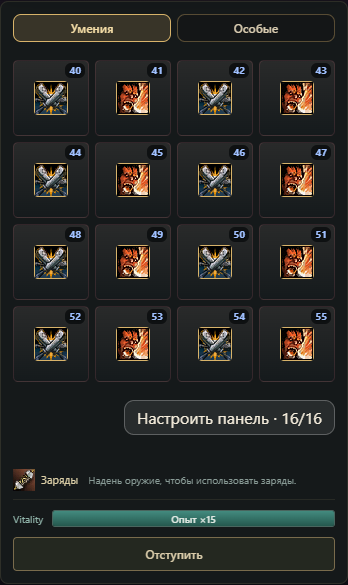
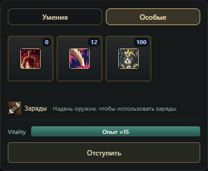

Battle skill panel
Skill images with MP costs in the top-right corner. Names and descriptions remain in tooltips. Choose up to 16 class skills; the order and selection are saved on the character and shared between hunting and boss fights.
Chosen skills

Life Stones, summons and toggles

Shop preview with the Mark of Champion quest icon